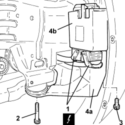
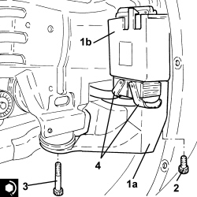
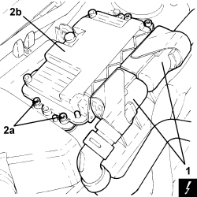

1060G80 DIESEL ELECTRONIC INJECTION CONTROL UNIT - .R
- Path
- Procedures > 10 ENGINE > 1060 DIESEL INJECTION SYSTEM > 1060G DIESEL INJECTION PRESSURE PUMP ELECTRONIC CONTROL > 1060G80 DIESEL ELECTRONIC INJECTION CONTROL UNIT - .R
- Kind
- repair procedure (removal / refitting; the operation number is the code)
- Applies to
- engines: 1.9 JTD 8v, 1.9 JTD 16v, 2.4 JTD 20v; all production periods
- Interactive page
- https://sloeber94.github.io/elrnDB-fCrm/en/#/194000341
Applies to: engines: 1.9 JTD 8v, 1.9 JTD 16v; all production periods
 Removing
Removing
 Refitting
RefittingOp. 0010T10 CHANGE ENGINE OIL
- Position the vehicle on a lift.
- Make sure that the ignition key is in the OFF position, then disconnect the battery terminal (-).
Op. 4450B04 RIGHT FRONT WHEEL - R.R
Op. 7055B66 ENGINE COMPARTMENT DUST COVER IN RIGHT FRONT WHEEL ARCH - R.R.
Op. 7055B91 RIGHT FRONT WHEEL ARCH LINER - R.R.
Op. 7055B54 UNDER ENGINE PROTECTION/GUARD - R.R.
1. Disconnect the electrical connections from the diesel electronic injection system control unit.
- Position a hydraulic jack under the front suspension frame.
2. Unscrew the bolt securing the diesel electronic injection system control unit/front suspension frame mount to the body.
3. Unscrew the front bolt securing the diesel electronic injection system control unit/front suspension frame mount to the body.
4. Remove the mount (4a) complete with diesel electronic injection system control unit (4b).

Applies to: engines: 1.9 JTD 8v, 1.9 JTD 16v; all production periods
- Working at the bench, undo the fastenings and separate the diesel electronic injection system control unit from the mounting.
Applies to: engines: 1.9 JTD 8v, 1.9 JTD 16v; all production periods
Refitting
Removing- Place the diesel electronic injection system control unit in its housing on the mounting and secure it with the retaining clip.
1. Refit the mount (1a) complete with diesel electronic injection system control unit (1b).
2. Tighten the front bolt securing the diesel electronic injection system control unit/front suspension frame mount to the body.
3. Tighten the new bolt securing the diesel electronic injection system control unit/front suspension frame mount to the body to the specified torque.
Component | Fastening | dia | Value (daNm) | Validity |
|---|
Front suspension frame | Front-rear bolts (to replace) | M12 | (bodyshell side) 9.0 - 11.0 + 90° | |
- Remove the hydraulic jack from underneath the front suspension frame.
4. Connect the electrical connections to the diesel electronic injection system control unit.

Applies to: engines: 2.4 JTD 20v; all production periods
Removing
Refitting- Make sure that the ignition key is in the OFF position, then disconnect the battery terminal (-).
1. Disconnect the electrical connections from the diesel electronic injection system control unit.
2. Undo the bolts (2a) and remove the diesel electronic injection system control unit (2b).

Applies to: engines: 2.4 JTD 20v; all production periods
Refitting
Removing- Refit the diesel electronic injection system control unit in its housing and secure with the bolts.
- Connect the electrical connections to the diesel electronic injection system control unit.
- Connect the negative battery terminal.
Topics linked from this page (7)
Topics that link to this page (73)
- B007 IGNITION KEY CANNOT BE ACKNOWLEDGED fault diagnosis table (symptom -> numbered test steps) · all engines; all production periods
- B010 ENGINE DOES NOT START (UNDER ANY CIRCUMSTANCES) fault diagnosis table (symptom -> numbered test steps) · all engines; all production periods
- B013 ENGINE STARTS WITH DIFFICULTY fault diagnosis table (symptom -> numbered test steps) · engines: 1.9 JTD 8v, 1.9 JTD 16v, 2.4 JTD 20v; all production periods
- B015 ENGINE DOES NOT START (STARTER MOTOR WORKING) fault diagnosis table (symptom -> numbered test steps) · engines: 1.9 JTD 8v, 1.9 JTD 16v, 2.4 JTD 20v; all production periods
- D004 ENGINE NOT RUNNING SMOOTHLY fault diagnosis table (symptom -> numbered test steps) · engines: 1.9 JTD 8v, 1.9 JTD 16v, 2.4 JTD 20v; all production periods
- D005 ENGINE DOES NOT PRODUCE BEST PERFORMANCE fault diagnosis table (symptom -> numbered test steps) · engines: 1.9 JTD 8v, 1.9 JTD 16v, 2.4 JTD 20v; all production periods
- D010 ENGINE IDLE IRREGULAR fault diagnosis table (symptom -> numbered test steps) · all engines; all production periods
- D012 ENGINE IDLING TOO LOW fault diagnosis table (symptom -> numbered test steps) · engines: 1.9 JTD 8v, 1.9 JTD 16v, 2.4 JTD 20v; all production periods
- D014 ENGINE GOING OFF ON IDLING (THEN RESTARTING) fault diagnosis table (symptom -> numbered test steps) · engines: 1.9 JTD 8v, 1.9 JTD 16v, 2.4 JTD 20v; all production periods
- D020 ENGINE CUTS OUT WHILST RUNNING (THEN NOT RESTARTING) fault diagnosis table (symptom -> numbered test steps) · engines: 1.9 JTD 8v, 1.9 JTD 16v, 2.4 JTD 20v; all production periods
- D021 ENGINE CUTS OUT WHILST RUNNING (THEN RESTARTS) fault diagnosis table (symptom -> numbered test steps) · all engines; all production periods
- D071 CRUISE CONTROL RECALL CONTROL NOT WORKING fault diagnosis table (symptom -> numbered test steps) · all engines; all production periods
- D072 CRUISE CONTROL SET+ CONTROL NOT WORKING fault diagnosis table (symptom -> numbered test steps) · all engines; all production periods
- D074 CRUISE CONTROL SYSTEM DOES NOT GO OFF WHEN BRAKE PEDAL PRESSED fault diagnosis table (symptom -> numbered test steps) · all engines; all production periods
- D075 THE CRUISE CONTROL SET- CONTROL IS NOT WORKING fault diagnosis table (symptom -> numbered test steps) · all engines; all production periods
- K030 MINIMUM ENGINE OIL PRESSURE WARNING LIGHT NOT WORKING fault diagnosis table (symptom -> numbered test steps) · all engines; all production periods
- K047 MINIMUM ENGINE OIL PRESSURE WARNING LIGHT ON CONSTANTLY fault diagnosis table (symptom -> numbered test steps) · all engines; all production periods
- K100 MIL WARNING LIGHT NOT WORKING (REMAINS OFF BEFORE STARTING) fault diagnosis table (symptom -> numbered test steps) · all engines; all production periods
- K101 MIL WARNING LIGHT STAYS ON (ENGINE STARTS) fault diagnosis table (symptom -> numbered test steps) · all engines; all production periods
- K123 WATER IN DIESEL FILTER WARNING LIGHT ON CONSTANTLY fault diagnosis table (symptom -> numbered test steps) · engines: 1.9 JTD 8v, 1.9 JTD 16v, 2.4 JTD 20v; all production periods
- K124 HEATER PLUGS WARNING LIGHT ON CONSTANTLY fault diagnosis table (symptom -> numbered test steps) · engines: 1.9 JTD 8v, 1.9 JTD 16v, 2.4 JTD 20v; all production periods
- K137 VEHICLE PROTECTION SYSTEM WARNING LIGHT ON CONSTANTLY fault diagnosis table (symptom -> numbered test steps) · all engines; all production periods
- Y002 P0087 - PRESSURE ON FLUTE fault diagnosis table (symptom -> numbered test steps) · engines: 1.9 JTD 8v, 1.9 JTD 16v, 2.4 JTD 20v; all production periods
- Y003 P0088 - PRESSURE ON FLUTE fault diagnosis table (symptom -> numbered test steps) · engines: 1.9 JTD 8v, 1.9 JTD 16v, 2.4 JTD 20v; all production periods
- Y069 P2010 - FLOW-RATE VALVE fault diagnosis table (symptom -> numbered test steps) · engines: 1.9 JTD 16v, 2.4 JTD 20v; all production periods
- Y070 P2011 - FLOW-RATE VALVE fault diagnosis table (symptom -> numbered test steps) · engines: 1.9 JTD 16v, 2.4 JTD 20v; all production periods
- Y097 U1706 - RETE CAN (NCM - NFR) fault diagnosis table (symptom -> numbered test steps) · engines: 1.9 JTD 8v, 1.9 JTD 16v, 2.4 JTD 20v; all production periods
- Y098 U1711 - CAN NETWORK (NCM - NCA) fault diagnosis table (symptom -> numbered test steps) · engines: 1.9 JTD 8v, 1.9 JTD 16v, 2.4 JTD 20v; all production periods; only with equipment: AUTOMATIC TRANSMISSION
- Y104 P0237 - TURBO PRESSURE fault diagnosis table (symptom -> numbered test steps) · engines: 1.9 JTD 8v, 1.9 JTD 16v, 2.4 JTD 20v; all production periods
- Y105 P0238 - TURBO PRESSURE fault diagnosis table (symptom -> numbered test steps) · engines: 1.9 JTD 8v, 1.9 JTD 16v, 2.4 JTD 20v; all production periods
- 1040AB SUBMERGED FUEL PUMP CHECK test / check procedure · engines: 1.9 JTD 8v, 1.9 JTD 16v, 2.4 JTD 20v; all production periods
- 1060EA DIESEL TEMPERATURE CHECK test / check procedure · engines: 1.9 JTD 8v, 1.9 JTD 16v, 2.4 JTD 20v; all production periods
- 1060EB FLOW MODULATOR SOLENOID OPERATION CHECK test / check procedure · engines: 1.9 JTD 8v, 1.9 JTD 16v, 2.4 JTD 20v; all production periods
- 1060FA INJECTOR OPERATION CHECK test / check procedure · engines: 1.9 JTD 8v, 1.9 JTD 16v; all production periods
- 1060FA INJECTOR OPERATION CHECK test / check procedure · engines: 2.4 JTD 20v; all production periods
- 1060FB INJECTOR CIRCUIT OPERATION CHECK test / check procedure · engines: 1.9 JTD 8v, 1.9 JTD 16v; all production periods
- 1060FB INJECTOR CIRCUIT OPERATION CHECK test / check procedure · engines: 2.4 JTD 20v; all production periods
- 1060GD ATMOSPHERIC PRESSURE CHECK test / check procedure · engines: 1.9 JTD 8v, 1.9 JTD 16v, 2.4 JTD 20v; all production periods
- 1060GF SUPERCHARGING PRESSURE CHECK test / check procedure · engines: 1.9 JTD 8v, 1.9 JTD 16v, 2.4 JTD 20v; all production periods
- 1060GG CHECK MEASURED AIR MASS test / check procedure · engines: 1.9 JTD 8v, 1.9 JTD 16v, 2.4 JTD 20v; all production periods
- 1060GH DIESEL PRESSURE CHECK test / check procedure · engines: 1.9 JTD 8v, 1.9 JTD 16v, 2.4 JTD 20v; all production periods
- 1060GI ENGINE SPEED CHECK test / check procedure · engines: 1.9 JTD 8v, 1.9 JTD 16v, 2.4 JTD 20v; all production periods
- 1060GJ CHECK ENGINE CONTROL UNIT SOFTWARE RELEASE test / check procedure · engines: 1.9 JTD 8v, 1.9 JTD 16v, 2.4 JTD 20v; all production periods
- 1060GK CHECK CONTROL UNIT SOFTWARE AND HARDWARE test / check procedure · engines: 1.9 JTD 8v, 1.9 JTD 16v, 2.4 JTD 20v; all production periods; only with equipment: AUTOMATIC TRANSMISSION
- 1060GK CHECK CONTROL UNIT SOFTWARE AND HARDWARE test / check procedure · engines: 1.9 JTD 8v, 1.9 JTD 16v, 2.4 JTD 20v; all production periods; only with equipment: MECHANICAL GEARBOX
- 1060GL CHECK OPERATION OF MAIN ENGINE CONTROL UNIT RELAY test / check procedure · engines: 1.9 JTD 8v, 1.9 JTD 16v, 2.4 JTD 20v; all production periods
- 1060GM CHECK ENGINE CONTROL UNIT CONNECTIONS test / check procedure · engines: 1.9 JTD 8v, 1.9 JTD 16v, 2.4 JTD 20v; all production periods
- 1060GN CHECK ENGINE CONTROL UNIT CONNECTIONS test / check procedure · engines: 1.9 JTD 8v, 1.9 JTD 16v, 2.4 JTD 20v; all production periods
- 1060GO INTEGRATED THROTTLE BODY OPERATION CHECK test / check procedure · engines: 1.9 JTD 8v, 1.9 JTD 16v, 2.4 JTD 20v; all production periods
- 1060GP CHECK ENGINE CONTROL UNIT CONNECTIONS test / check procedure · engines: 1.9 JTD 8v, 1.9 JTD 16v, 2.4 JTD 20v; all production periods
- 1060GQ CHECK OPERATION OF SENSOR DETECTING PRESENCE OF WATER IN DIESEL FILTER test / check procedure · engines: 1.9 JTD 8v, 1.9 JTD 16v, 2.4 JTD 20v; all production periods
- 1060GR CHECK OPERATION OF FUEL PRESSURE SENSOR ON RAIL test / check procedure · engines: 1.9 JTD 8v, 1.9 JTD 16v, 2.4 JTD 20v; all production periods
- 1060GS FLOW METER OPERATION CHECK test / check procedure · engines: 1.9 JTD 8v, 1.9 JTD 16v, 2.4 JTD 20v; all production periods
- 1060OE ENGINE COOLANT TEMPERATURE SENSOR OPERATION CHECK test / check procedure · engines: 1.9 JTD 8v, 1.9 JTD 16v, 2.4 JTD 20v; all production periods
- 1064BB SUPERCHARGING PRESSURE SOLENOID (PIERBURG) VALVE OPERATION CHECK test / check procedure · engines: 1.9 JTD 8v, 1.9 JTD 16v, 2.4 JTD 20v; all production periods
- 1064BD SUPERCHARGING TEMPERATURE CHECK test / check procedure · engines: 1.9 JTD 8v, 1.9 JTD 16v, 2.4 JTD 20v; all production periods
- 1064BE CHECK TURBO VALVE PROTECTION FUSE test / check procedure · engines: 1.9 JTD 8v, 1.9 JTD 16v, 2.4 JTD 20v; all production periods
- 1068AC ACCELERATOR PEDAL CHECKS test / check procedure · engines: 1.9 JTD 8v, 1.9 JTD 16v, 2.4 JTD 20v; all production periods
- 1080BF CHECK DIFFERENTIAL PRESSURE SENSOR OPERATION test / check procedure · engines: 1.9 JTD 8v, 1.9 JTD 16v, 2.4 JTD 20v; all production periods
- 1080BG PRECONVERTER OUTPUT TEMPERATURE SENSOR OPERATION CHECK test / check procedure · engines: 1.9 JTD 8v, 1.9 JTD 16v, 2.4 JTD 20v; all production periods
- 1080BH DPF INPUT TEMPERATURE SENSOR OPERATION CHECK test / check procedure · engines: 1.9 JTD 8v, 1.9 JTD 16v, 2.4 JTD 20v; all production periods
- 1080CB EGR SOLENOID OPERATION CHECK test / check procedure · engines: 1.9 JTD 8v, 1.9 JTD 16v, 2.4 JTD 20v; all production periods
- 3340AB SPEED SIGNAL CHECK test / check procedure · engines: 1.9 JTD 8v, 1.9 JTD 16v, 2.4 JTD 20v; all production periods
- 3340AB SPEED SIGNAL CHECK test / check procedure · engines: 2.4 JTD 20v; all production periods
- 5040BD LINEAR SENSOR OPERATION CHECK test / check procedure · engines: 1.9 JTD 8v, 1.9 JTD 16v, 2.4 JTD 20v; all production periods
- 5505AE ENGINE MANAGEMENT CONTROL UNIT POWER SUPPLY FUSE CIRCUIT CHECK test / check procedure · engines: 1.9 JTD 8v, 1.9 JTD 16v, 2.4 JTD 20v; all production periods; only with equipment: MECHANICAL GEARBOX
- 5505AE ENGINE MANAGEMENT CONTROL UNIT POWER SUPPLY FUSE CIRCUIT CHECK test / check procedure · engines: 1.9 JTD 8v, 1.9 JTD 16v, 2.4 JTD 20v; all production periods; only with equipment: AUTOMATIC TRANSMISSION
- 5510CG CHECK TIMING SENSOR OPERATION test / check procedure · engines: 1.9 JTD 8v, 1.9 JTD 16v, 2.4 JTD 20v; all production periods
- 5520BA DIESEL PREHEATING RELAY CHECK test / check procedure · engines: 1.9 JTD 8v, 1.9 JTD 16v, 2.4 JTD 20v; all production periods; only with equipment: MECHANICAL GEARBOX
- 5520BA DIESEL PREHEATING RELAY CHECK test / check procedure · engines: 1.9 JTD 8v, 1.9 JTD 16v, 2.4 JTD 20v; all production periods; only with equipment: AUTOMATIC TRANSMISSION
- 5520CA HEATER PLUGS OPERATION CHECK test / check procedure · engines: 1.9 JTD 8v, 1.9 JTD 16v, 2.4 JTD 20v; all production periods
- 5530BB BATTERY VOLTAGE CHECK test / check procedure · engines: 1.9 JTD 8v, 1.9 JTD 16v, 2.4 JTD 20v; all production periods
- 0510A10 CYLINDER COMPRESSION - CHECK FOR LOOSE SPARK PLUGS OR INJECTORS repair procedure (removal / refitting; the operation number is the code) · all engines; all production periods